Display
Zoom
The following options  define if zoom is set in both directions (XY), only in the X direction,
or only in the Y direction.
define if zoom is set in both directions (XY), only in the X direction,
or only in the Y direction.
Now select with the mouse one position in the spectrum, press the left
button, select a second position, and release the left mouse button. The
selected area will now fill the whole viewport.
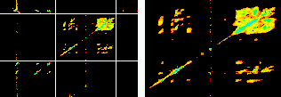
Zoom XY
Use these buttons to change the zoom settings:
 Zoom 2x in, X direction.
Zoom 2x in, X direction.
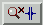
Zoom 2x out, X direction
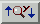
Zoom 2x in, Y direction.
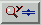
Zoom 2x out, Y direction.
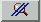
Display whole spectrum (undo all zoom actions)
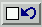
Undo last zoom action.
Redo last zoom action.
Mouse button 3: scrolling and panning
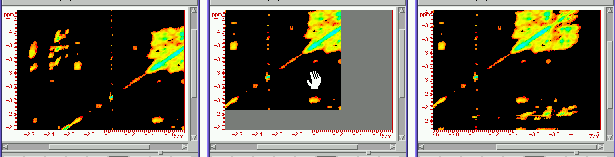
When part of the spectrum has been selected with the zoom option, the
scroll bars can be used to scroll through the spectrum. Alternatively, one
can use the right mouse button. This option shows a 'hand cursor' that grabs
the spectrum and moves it around.
Axis Units
Command line: Set Axis Units
Chose what units (if any) will be used for the x- and y-axis. Use Display->Axis
Units to get the following popup menu:
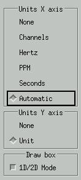
For 1D and 2D spectra, one can chose None, Channels (or points),
Hertz, PPM, or Seconds for the x-axis. If this option is
set to Automatic, Seconds will be selected if the program decides that
a FID is displayed, and PPM otherwise. This decision, however, is
not always reliable, and manual intervention can be required. For 1D spectra,
the options for the y-axis are None and Unit. For 2D spectra,
the y-axis options are identical to those of the x-axis. The Draw Box
option toggles the display of the box around the spectrum.
Show Data
Command line: Show data arrays
Use Display->Show Data to get the following popup menu:
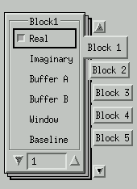
Set the visibility of data.With this menu, which is only valid when
1D files are presented, all data arrays in all blocks can be displayed or
hidden. In the example above, only the real data of block 1 are displayed.
This is the default.
Link Scaling
When the auto scale option is enabled (when 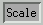
is pressed), all data is scaled separately in such a way that each
data array fully fills its viewport. It can be advantageous to use the
same scaling for some data types, e.g. real and imaginary data, or real data
from different blocks. Use Display->Link Scaling to show the Link
Scaling popup menu. Two types of linking can be defined. Linking
to the scaling of the real data of the same block, and linking of the scaling
of all data in a block to the corresponding scaling in block 1.
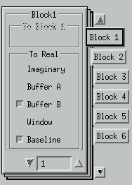
The Link Viewport popup menu.
To link the scaling of the imaginary data to the corresponding real
data, check Imaginary
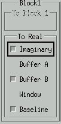
Example:
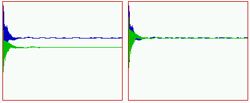
The result of linking the scaling of the Imaginary data (green) to the scaling
of the Real data (blue).
To link the scaling of Block 2 to Block 1, check Whole Block.
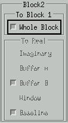
Adjust Scaling
With this option, 1D spectra (and other types of 1D data) can be shifted
or scaled relative to each other. Use Display->Adjust Scaling to
get the following popup menu:
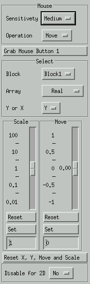
Mouse
Grab mouse button 1 will select this button  . The Sensitivity of the mouse can be set to Low, Medium and High. Select
Move or Scale to do that operation with the mouse.
. The Sensitivity of the mouse can be set to Low, Medium and High. Select
Move or Scale to do that operation with the mouse.
Select
Select the data that should be adjusted. Select a block and
an array, e.g. Real for a normal 1D spectrum. Select x or y to move or scale.
Scale, Move
If the mouse is not used, these sliders can be used instead. When X
has been selected, Scale scales the selected data array in the x
direction, Move moves the array to the left or to the right, etc.
The current value of the slider is displayed in the text box at its bottom.
One can type a value in this box and press Set to activate it. Press
Reset to set the slider at its default position. The Scale
slider has logarithmic scale that ranges from 0.01x to 100x the current scale.
The Move slider has a linear scale and can move 1x to the left or
to the right.
Reset X and Y, Move and Scale
Reset all scale and move values, for the currently active array.
Disable 'Adjust Scaling' for 2D
When this option is set to Yes, the Adjust Scaling options
do NOT work in the 2D mode, when a 1D spectrum is displayed on top of the
2D spectrum.
Edit colormap
Select new colors for some of the items. Items can be real or
imaginary data, or axis or grid. All the available colors are displayed in
a grid. To change the color of an item, select the block and the item and
select a new color by pressing the left mouse button in one of the colored
squares. The bar at the top of the window will display the item that has been
selected, with the new color as background. After a new plot command, the
new color will be visible in the main window.
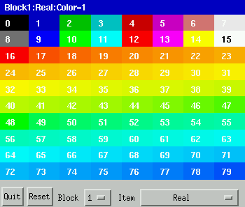
Quit
Close the color map.
Reset
Reset the color of items to their default values.
Block
Select a block.
Item
The object that has been associated with a color.